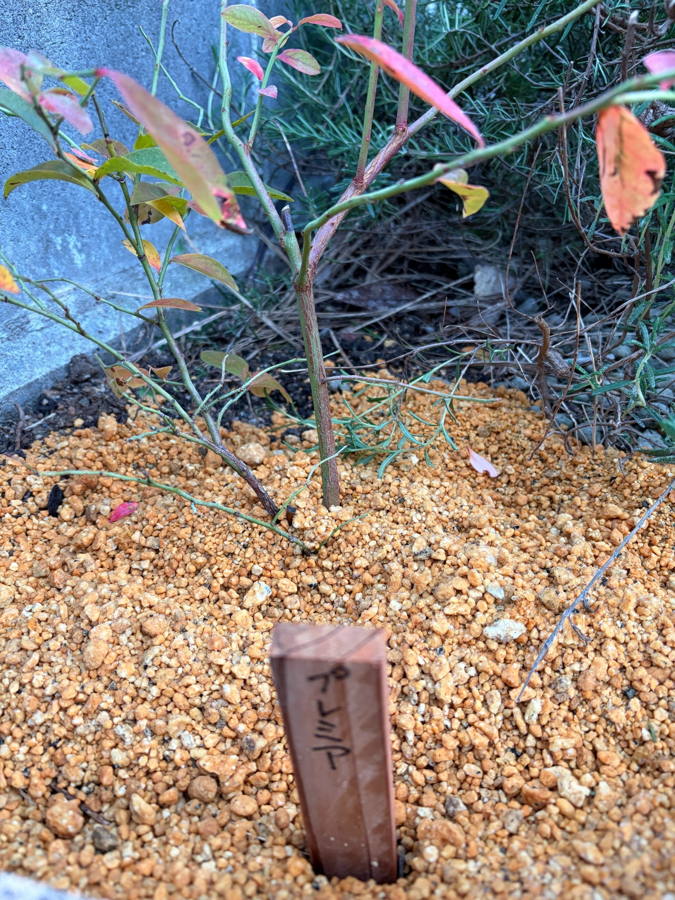

2025/12/16 プレミアを庭に地植えしました。購入時のポットから、新しい場所へ
12月13日に購入したラビットアイ系ブルーベリーの「プレミア」を、今日、庭に地植えしました。
一緒に迎えたクライマックスも同じ日に地植えし、メンデイトはポット植えにしました。3品種それぞれの植え付けを終え、これから育てていく場所が決まりました。
購入したときには黒い育苗ポットに入っていましたが、今は庭の地面から枝が立ち上がっています。手前には「プレミア」と書いた木製の名札を立てました。苗を迎えた日の姿から、庭で育て始める姿へと記録がつながりました。
植え付けたばかりなので、まだ生長の変化を見る段階ではありません。まずは、今日の葉の色や枝の形、株元の様子を残し、この場所でどのように育っていくのかを見守っていきたいと思います。
購入から3日。育苗ポットから庭へ移りました
プレミアを購入したのは、3日前の12月13日です。クライマックス、メンデイトとともに迎え、黒い育苗ポットに入った状態で、最初の写真を残しました。
そのときは、品種名の入った大きなラベルと、緑や黄色、橙色、赤みを帯びた葉が印象に残りました。中央から上へ伸びる枝と、左右へ分かれる細い枝を眺めながら、これから庭で育てることを楽しみにしていました。
今日は、そのプレミアをポットから出して地植えしました。鉢と苗が一つのまとまりになっていた姿から、周囲の土や植物につながる庭の一株になりました。
購入から植え付けまでの間隔は3日ですが、写真の印象はずいぶん違います。これは枝葉が急に変わったということではなく、ポットやラベルのあった姿から、地面に植わった姿へと変わったことが大きいと思います。
今は、苗を買ってきたときの楽しみに、庭で育て始めた実感が加わりました。
クライマックスと同じ日に地植えしました
今回、クライマックスとプレミアは地植えにし、メンデイトだけはポット植えにしました。
同じ日に購入した3品種を、同じ日に植え付けることができました。これからは、それぞれがどんな葉を広げ、枝を伸ばしていくのかを見ていきます。
プレミアとクライマックスは、どちらも庭に直接植えた株として記録していきます。同じ地植えでも、品種や枝ぶり、植わっている場所には違いがあるので、すべて同じように育つとは限りません。
メンデイトはポット植えなので、植え方にも違いがあります。後で生育に差が見えてきたときにも、品種だけの違いと決めつけず、それぞれの株の様子を残しておきたいと思います。
まずは、3品種の植え付けを終えた今日を、それぞれの場所での生育の出発点にします。
株元に「プレミア」の木製の名札を立てました
地植えした株の前には、「プレミア」と書いた木製の名札を立てました。
購入時のラベルには、果実の写真とともに品種名が大きく書かれていました。今回は庭に植えたので、株元の名札が、この場所で育てている品種を教えてくれます。
3品種を育て始めると、葉や枝の姿を覚えるだけでなく、どの株なのかをはっきりさせておくことも大切になります。特に葉が少なくなる時期には、名札があると見分けやすくなります。
写真にも名札と株元が一緒に写り、これから同じ株の記録をつないでいく目印になりました。
今はまだ細い枝が目立つ姿ですが、この名札の後ろで、プレミアがどのように大きくなっていくのかを楽しみにしています。
株元の周囲には、黄土色の粒が広がっています
株元の周囲には、黄土色の粒状の用土が広がっています。その中央付近から枝が立ち上がり、ポットに入っていたときよりも、株元と枝のつながりが見やすくなりました。
粒の大きさは一様ではなく、細かなものと大きめのものが混じっています。奥には色の濃い土が見える部分もあり、周囲の地面との境目も写真に残っています。
購入時は黒いポットや大きなラベルに目が向きましたが、地植えした今回は、枝がどこから立ち上がっているのかにも目が向きます。中央の比較的太い枝と、その左側へ斜めに伸びる枝が、株元近くで見えています。
地面の上の姿は分かりますが、その下で根がどのように広がっているのかは、写真からは分かりません。植え付けた今日の段階で、庭の土に根付いたと判断することもできません。
まずは、この場所に植えた日の株元を残しておき、これからの枝葉の変化と合わせて見ていきたいと思います。
中央から上へ伸びる枝が目立ちます
今回の写真では、中央に上へ向かって伸びる枝が見えます。緑色の部分に赤褐色が混じり、途中から左右へ枝が分かれています。
右側へ伸びる枝には緑色が目立ち、その先に葉が残っています。左側には、上へ伸びる細い枝や、低い位置で横へ広がる枝が重なっています。
枝の太さにも違いがあります。中央の枝と、その周囲の細い枝をたどると、今のプレミアがどのような形をしているのかが見えてきます。
購入時の写真でも、中央から上へ伸びる枝と、左右へ分かれる枝がありました。地植えした今回も、その骨組みを持った姿です。
ただ、写真を撮った向きや距離が違うため、購入時と同じ枝をすべて追えるわけではありません。3日間で伸びた長さや枝数の変化を比べるよりも、今回は地植えした時点の枝ぶりとして残しておきます。
葉が少ない部分では、細い枝までよく見えます
枝には、葉が残っているところと、葉のない部分があります。特に左下から中央にかけては細い枝が見え、枝分かれの様子をたどることができます。
葉が密に重なっていないので、枝がどちらへ向かって伸びているのかが分かりやすい姿です。上方向へ伸びる枝だけでなく、横へ広がる枝もあり、株の形に幅があります。
葉のついていない枝を見ると、これから芽が動いたときに、どのあたりから葉が広がるのかも気になります。今は枝の線が目立っていますが、葉が増える季節には印象が変わりそうです。
葉がない部分については、いつ、どのくらい葉が落ちたのかまでは分かりません。購入時にも葉の少ないところはあったので、今回の姿だけで、地植え後に落葉が進んだとは考えないようにします。
今見えている細い枝も含めて、植え付け当日の株の形として残しておきたいです。
緑色や黄色、赤みを帯びた葉が残っています
地植えしたプレミアには、緑色や黄緑色の葉が残っています。その間には黄色みの強い葉や、橙色、赤みを帯びた葉も見られます。
写真の上の方には、赤く色づいた細長い葉があります。左側には緑を残した葉があり、右側には橙色に近い葉が下がっています。
一枚の葉の中でも、中央に黄緑色を残しながら縁や葉先に赤みがあるものが見えます。株全体が一つの色にそろっているわけではなく、枝や葉によって色づき方に違いがあります。
13日の購入時にも、緑から黄色、橙色、赤みのある葉が混じっていました。今回も、そうした色の違いを残した姿です。
冬の苗は枝が中心の印象になりがちですが、残っている葉を一枚ずつ眺めると、まだいろいろな色があります。これから葉が落ちていくのか、しばらく残る葉があるのかも見ていきたいと思います。

葉の斑点や傷みは、購入時から続く姿として見ていきます
葉の一部には、暗い色の斑点や、葉先・縁が褐色になった部分が見えます。右側の橙色の葉には黒っぽく見えるところがあり、手前の葉にも色むらや葉先の傷みが見られます。
購入時の写真にも、黒褐色の斑点や穴、葉先・縁の傷みがありました。今回も、残っている葉がすべて傷みのない状態というわけではありません。
ただ、前回と今回では写っている角度や葉の重なり方が違います。同じ葉の変化を一枚ずつ追えているわけではないので、斑点が広がった、傷んだ葉が増えたとまでは言えません。
今日植え付けたばかりなので、今見えている葉色や傷みを、地植えによって新しく生じた変化として受け止めることもしません。
葉の色や斑点だけから、原因や株全体の調子を決めつけず、まずは植え付け時点の状態として残しておきます。その後の芽や枝葉の動きと合わせて、少しずつ様子を見ていきたいです。
周囲の植物とともに、庭の一角で育て始めます
プレミアの後ろや右側には、細い針状の葉をつけた周囲の植物があります。その枝葉が写真の中で重なり、庭に植わったことを感じさせます。
プレミアの比較的幅のある葉と、周囲の細い葉では形が違います。枝が交差している部分もあるので、緑が見えるところをすべてプレミアの葉として見ないようにしながら、株の輪郭をたどります。
左側には壁があり、足元には粒状の用土が広がっています。購入時にポットを置いていた姿とは背景も変わり、これからこの場所で育てる記録になりました。
周囲の植物がある中で、プレミアがどの方向へ枝を伸ばしていくのか。葉が広がったときに、この一角の見え方がどう変わるのかも楽しみです。
今は株の枝がよく見えていますが、季節が進んだときにも同じ場所で写真を残し、庭の中で育つ姿を見ていきたいと思います。
まずは植え付け、その先の芽吹きや開花へ
購入したときから、いつか自分の庭でブルーベリーを収穫できたらと思っています。プレミアを地植えしたことで、その楽しみに向けて一歩進みました。
ただ、今日は植え付けを終えたところです。これから根がなじみ、季節を越して、芽や葉にどんな動きが見られるのかを、順番に見守っていきます。
春になったら、プレミアとクライマックスがそれぞれいつ花を咲かせるのか、花の時期がどのくらい重なるのかにも目を向けたいです。メンデイトも含め、3品種を一緒に育てる楽しみがあります。
花が咲いた先には実付きへの期待がありますが、収穫だけを待つのではなく、そこへ至るまでの変化も残していきたいと思います。
今の細い枝や、色づいて残っている葉も、後で振り返れば、庭で育て始めたときの大切な姿になりそうです。
プレミアの、庭での生育が始まりました
12月13日に、黒い育苗ポットに入った苗を迎えました。そして今日、12月16日に地植えし、株元へ木製の名札を立てました。
わずか3日間ですが、購入した苗を眺めるところから、庭に植えた株を見守るところへと進みました。プレミアの記録にも、新しい一枚が加わりました。
緑色や黄色、赤みを帯びた葉が残り、中央から上へ伸びる枝と、横へ分かれる細い枝が見えています。葉の斑点や傷みも含めて、これが植え付けた日の姿です。
これから葉が少なくなる時期を迎えても、名札のあるこの場所で、次の変化を見ていきます。新しい葉が広がったときや、花が咲いたときに、今日の写真と見比べることも楽しみです。
2025年12月16日。プレミアを庭に地植えし、この場所での生育記録を始めます。